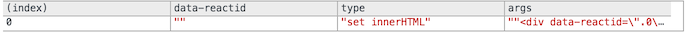

性能分析工具
通常情况下，React在沙箱中是非常快的。但是，在你应用的一些情景中，你需要仔细推敲每一个性能点。React提供了一个函数shouldComponentUpdate，通过这个函数，你能够给React的差异检查添加优化代码。
为了给你一个你的应用总体的性能概览，ReactPerf是一个分析工具，告诉你需要把这些钩子函数放在哪里。
注意：
开发的构建过程比生产的构建过程要慢，是因为所有额外逻辑的提供，例如，友好的控制台警告（生产构建时会去掉）。因此，分析工具仅用于指出你应用中相对影响性能的部分。
通用API #
当使用react-with-addons.js在开发模式下构建的时候，这里描述的Perf对象是以React.addons.Perf的形式暴露出来的。
Perf.start()和Perf.stop() #
开始/停止检测。React的中间操作被记录下来，用于下面的分析。花费一段微不足道的时间的操作会被忽略。
Perf.printInclusive(measurements) #
打印花费的总时间。如果不传递任何参数，默认打印最后的所有检测记录。它会在控制台中打印一个漂亮的格式化的表格，像这样：

Perf.printExclusive(measurements) #
“独占（Exclusive）”时间不包含挂载组件的时间：处理props，getInitialState，调用componentWillMount和componentDidMount，等等。

Perf.printWasted(measurements) #
分析器最有用的部分。
“浪费”的时间被花在根本没有渲染任何东西的组件上，例如界面渲染后保持不变，没有操作DOM元素。

Perf.printDOM(measurements) #
打印底层DOM操作，例如，“设置innerHTML”和“移除节点”。

高级API #
上面的打印方法使用Perf.getLastMeasurements()打印好看的结果。
Perf.getLastMeasurements() #
从最后的开始-停止会话中得到检测结果数组。该数组包含对象，每个对象看起来像这样：
{
// The term "inclusive" and "exclusive" are explained below
"exclusive": {},
// '.0.0' is the React ID of the node
"inclusive": {".0.0": 0.0670000008540228, ".0": 0.3259999939473346},
"render": {".0": 0.036999990697950125, ".0.0": 0.010000003385357559},
// Number of instances
"counts": {".0": 1, ".0.0": 1},
// DOM touches
"writes": {},
// Extra debugging info
"displayNames": {
".0": {"current": "App", "owner": "<root>"},
".0.0": {"current": "Box", "owner": "App"}
},
"totalTime": 0.48499999684281647
}